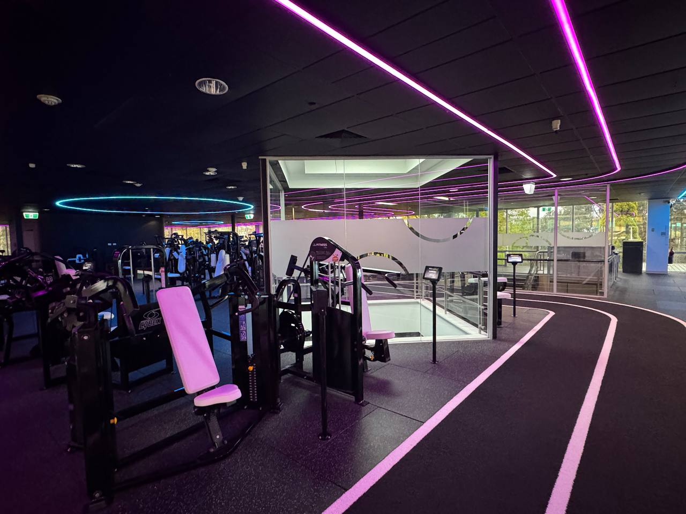

AI Overseer —
Master Plan
Australia's first AI-tracked gym. Every machine. Every rep. Every member.
Vision & End Goal
AI Overseer is a ceiling-mounted computer vision system that automatically tracks every rep, every set, and every weight lifted on every machine in the gym — with zero manual input from members.


The Member Experience
Before vs After
Business Case
Retention
Members stay because the experience is genuinely unique. No gym in Australia — or the world — does this. Once members have their full training history here, they won't leave.
Premium Positioning
The AI system justifies higher membership pricing. $32/week vs a standard gym at $15/week. Members pay for the tech experience, not just access to machines.
Licensing Revenue
Once proven at XL Fitness, the system can be licensed to other gyms as a SaaS product. Recurring revenue from a solved problem is more valuable than the gym itself.
Data Moat
Training insights no gym currently offers. Volume, form, progression over time. This dataset becomes a competitive moat — valuable for research, coaching, and AI training.
The Data Flywheel
Revenue Context
System Architecture
Three cameras per machine feed three AI models. Everything merges in a FastAPI orchestration server and writes to Supabase. Outputs flow to the tablet, leaderboard, and member profile.
Code Repositories
The Three Tracking Systems
Three independent AI systems run simultaneously per machine. Each camera has a dedicated job. Everything merges in the orchestration server before writing to the database.
How It Works
- Camera 2 (lateral, 45° from ceiling) captures the full body side-on at ~30fps
- MoveNet Lightning detects 17 body landmarks per frame in real time
- Elbow angle calculated every frame from shoulder → elbow → wrist keypoints
- LSTM neural network analyses the angle sequence: is this a complete rep? Good or bad form?
- State machine tracks workout phase (seated, repping, resting, done)
- Rep count and form score sent via webhook to tablet and leaderboard
Current State
- Rule-based counter: ✅ working, counting real gym reps
- NN v4 MLP classifier: ✅ live at 75% accuracy
- Labeler tool: ✅ built, section-based, 7 states
- Session manager: ✅ built with offline queue
- Training sequences collected: 445 (target: 500+)
- LSTM v5: 🔴 needs 500+ sequences to train
Live Links
- Demo:
xldonkey.github.io/gym-ai-system/pose/alpha.html - Labeler:
xldonkey.github.io/gym-ai-system/pose/label.html
The State Machine
The core logic that determines what the user is doing at any moment. 7 states, each with specific transition conditions.
How It Works
- Camera 3 is positioned overhead, angled toward the weight stack
- A bounding box is pre-configured in software to the weight stack area only
- Coloured tape strips are applied to each plate spine before deployment
- Colour detection algorithm identifies which tapes are above the selector pin
- Plate weights are summed: all detected plates above pin = total weight loaded
- Weight value sent to orchestration server, combined with rep data
Tape Colour Coding
| Colour | Weight | Notes |
|---|---|---|
| ⬜ White | 5 kg | Smallest increment, thin tape strip |
| 🟨 Yellow | 10 kg | Medium plates, high contrast |
| 🟦 Blue | 20 kg | Heaviest standard plate |
Physical Action Required
Current Status
Technical Detail
- Camera: tight 4mm lens for close-range stack detail
- Algorithm: HSV colour space detection (not RGB — more robust to lighting changes)
- Selector pin position: detectable by shadow or physical marker
- Calibration: one-time per machine during setup — map each plate position to a pixel region
- Output: integer kg value, confidence score
- Edge cases: plates partially visible, heavy shadows, dirty tape → handled by confidence threshold
Challenges & Mitigations
How It Works (Phase 3)
- Camera 1 is positioned straight down (or slight angle) above the machine seat
- As member sits down, face is captured from above — a consistent, reliable angle
- Re-ID model compares face embedding to GymMaster member database
- If confidence >95% → member auto-identified, session starts immediately
- If confidence <95% → tablet prompts: "Please tap your card"
- Card tap = verified ground truth → face footage auto-labelled → model retrains
The Card Tap Flywheel
Every card tap at a machine creates a perfect training example: we know who this person is with 100% certainty, and we have their face footage. The model retrains automatically. Over weeks, card taps become increasingly rare as the model improves.
Privacy & Implementation
Confidence Thresholds
| Confidence | Action |
|---|---|
| > 95% | Auto-identified. Session starts. No tap needed. |
| 80–95% | Likely correct but prompt card tap to confirm. |
| < 80% | Unknown member. Card tap required to proceed. |
Data Stored
- Face embeddings (numerical vectors) — not raw images
- Images kept locally for retraining, not uploaded to cloud
- Members notified of AI tracking during signup
- Opt-out available — card tap becomes their default identifier
Status
Software Plan
The full software stack from camera feed through to leaderboard. What's built, what's in progress, and the full architecture across all layers.
Current Software State
| Component | What it does | Status | Location |
|---|---|---|---|
| alpha.html | Live kiosk demo — MoveNet pose + rule-based rep counter in browser. Fullscreen mode. | Working | pose/alpha.html |
| label.html | Training data labeler. Section-based — label start/end of each state, not frame-by-frame. Exports JSON. | Working | pose/label.html |
| session.js | Session manager. Tracks machine, member, reps, weight, rest time. Offline queue. Sends webhooks. | Built | pose/session.js |
| machine-config.js | Per-machine configuration: angles, thresholds, camera positions, rep detection parameters. | Built | pose/machine-config.js |
| NN v4 MLP | Basic neural network classifier. 75% accuracy on rep vs non-rep. Deployed and running. | Live (75%) | models/v4/ |
| FastAPI server | Orchestration layer. Receives pose events, weight data, face ID. Writes to Supabase. | Manus — Week 1 | gym-ai-weight repo |
| Supabase schema | Cloud database. Sessions, reps, machines, members tables. | In progress | Supabase cloud |
| LSTM v5 | Sequence model — analyses full rep motion over time. Needs 500+ training sequences. | Needs data | models/v5/ |
Software Architecture Layers
30fps MJPEG or WebRTC
Python/server-side
Phase 3
→ angle calc → LSTM
→ state + rep count
→ plate identification
→ kg total
→ member match
→ confidence score
Manages member identity (face + card tap fallback)
Fires webhooks to tablet / leaderboard
Writes completed sets to Supabase
Handles offline queue replay
How session.js Works
Core Flow
- Member identity received (from face AI or card tap event)
- Session created: machine_id + member_id + timestamp
- Pose events streamed in from alpha.html (rep, form, state changes)
- Weight value injected from weight AI (single value per set)
- On state transition to
rest_time: set record assembled and POSTed - Webhook fires to tablet endpoint: JSON payload with rep count + weight + form
- Session record written to Supabase when member leaves machine
Offline Queue
If the server is unreachable (network blip, server restart), session.js queues events in localStorage. On reconnect, the queue replays in order. No data is lost even during connectivity issues.
Card Tap Flywheel Integration
When a card tap event arrives during a session, session.js updates the member_id with certainty=100% and emits a face_training_event to the face AI pipeline for auto-labelling.
Webhook Event Format
This is the exact JSON that session.js sends to the tablet endpoint on every set completion and on significant state changes:
{
"machine_id": "lat_pulldown_01",
"timestamp_utc": "2026-03-19T10:23:45Z",
"event_type": "pose_estimation",
"session_id": "sess_abc123",
"member_id": "member_456",
"member_confidence": 0.97,
"payload": {
"event": "rep_completed",
"state": "good_rep",
"rep_number": 8,
"rep_quality": "good",
"confidence": 0.91,
"elbow_angle_min": 45.3,
"elbow_angle_max": 178.2,
"duration_ms": 2340,
"weight_kg": 50
}
}
// Set completion event (fires on rest_time transition):
{
"machine_id": "lat_pulldown_01",
"timestamp_utc": "2026-03-19T10:24:12Z",
"event_type": "set_complete",
"session_id": "sess_abc123",
"member_id": "member_456",
"payload": {
"set_number": 3,
"reps_total": 10,
"reps_good": 8,
"reps_bad": 2,
"form_score": 0.80,
"weight_kg": 50,
"duration_s": 42,
"rest_started_at": "2026-03-19T10:24:12Z"
}
}Training Data Plan
The AI is only as good as the data it's trained on. This section documents exactly how training data is collected, labelled, processed, and fed back into the model pipeline.
Filming Protocol
Camera Setup
- Angle: Side-on — the camera must see the full body profile. This is the view Camera 2 will have from the ceiling arm.
- Distance: 2–3m from the machine. Full body must be visible from head to foot.
- Height: Shoulder height or slightly above. Simulates the ceiling arm angle.
- Resolution: 1080p minimum. 4K preferred for labelling clarity.
- Frame rate: 30fps. Matches production camera spec.
- Lighting: Natural gym lighting — do NOT add extra lights. Train on real conditions.
What to Film (per session)
- Good reps: Full range of motion, controlled tempo, correct form — 10 minutes minimum
- Bad reps: Partial range, jerky motion, leaning back excessively — 5+ minutes
- False movement: Shifting in seat, looking around, adjusting clothing, coughing — 5+ minutes
- Rest periods: Sitting still between sets — let it run naturally
- Multiple people: Different body sizes, different clothing — diversity matters
- Approach/leave: Person walking up, sitting down, adjusting, leaving
Naming Convention
session_YYYYMMDD_HHMM_lat_pulldown.mp4
session_20260320_1430_lat_pulldown.mp4Labelling with label.html
Section-Based Approach
The labeler is NOT frame-by-frame. It works in sections — you mark the start and end of each state segment. This is 10× faster than frame-level annotation.
Keyboard Shortcuts
| Key | State |
|---|---|
0 | no_user_present |
1 | user_present_not_engaged |
2 | user_seated_engaged |
3 | good_rep |
4 | bad_rep |
5 | false_movement |
6 | rest_time |
Space | Play / Pause |
←→ | Step frame |
Enter | Mark segment end & save |
Output Format
The labeler exports JSON — a list of segments with timestamps and labels. Donkey processes this JSON to extract pose sequences and retrain the model.
How Donkey Processes Training Data
- Matt sends labelled JSON file via Google Drive or direct upload
- Donkey runs MoveNet over the original video at the timestamped segments
- 17 keypoints extracted per frame → angle sequences assembled per segment
- Sequences normalised (centre on hip, scale to torso height) for body-size independence
- Sequences added to training dataset (currently 445, target 500+)
- Model retrained on full dataset (v4 MLP or v5 LSTM)
- Accuracy benchmarked on held-out test set
- If accuracy improves → model deployed to
models/current/ - alpha.html hot-reloads new model on next page load
Training Milestones
| Milestone | Sequences | Model Unlocked | Expected Accuracy | Status |
|---|---|---|---|---|
| Current | 445 | v4 MLP | 75% | Live |
| LSTM threshold | 500+ | v5 LSTM (single joint) | 90%+ | ~55 away |
| High confidence | 1,000 | v5 LSTM (robust) | 92–95% | Phase 2 |
| Multi-joint | 2,000+ | v6 Full-body LSTM | 95%+ | Phase 2 |
| Per-machine fine-tune | 500 per machine | Machine-specific models | 97%+ | Phase 3 |
Supplemental Data — YouTube
What We Can Use
- Lat pulldown tutorial videos — often side-on, clear form demonstration
- "Good form vs bad form" comparison videos
- Gym POV videos where camera happens to be side-on
- Physical therapy / rehab channels — very controlled, clear movements
Caveats
- Background is different — model must generalise. Normalisation helps.
- Camera angles vary — only use clearly side-on footage
- Label quality — YouTube "good reps" may include minor form issues
- Copyright — training use only, no redistribution of footage
Model Roadmap
Limitation: MLPs treat each frame independently — no memory of what happened before. A LSTM understands that a rep is a sequence over time, not just individual moments.
Why LSTM: A lat pulldown rep is not a single pose — it's 2–3 seconds of continuous motion. LSTM remembers what happened 1 second ago and uses that context to judge what's happening now.
Neural Network Architecture
How the AI brain is structured — from raw camera pixels to "good rep" or "bad rep". This covers every layer of every model, why we chose the architecture, and how it evolves as we collect more data.
Pipeline Overview
↓ MoveNet Lightning (pre-trained, frozen)
17 keypoints × (x, y, confidence) = 51 values
↓ Feature extraction
[min_angle, ROM, std_angle, duration_s, avg_angle] ← v4 MLP input
[angle_t0, angle_t1, ... angle_t30] ← v5 LSTM input
↓ Classifier
Output: good_rep / bad_rep / false_movement
Model v4 — Current (MLP) ✅ Live
min_angle, ROM, std_angle,
duration_s, avg_angle
good_rep / bad_rep / false_movement
| Accuracy | 75.1% CV |
| Training sequences | 445 |
| Parameters | ~800 |
| Solver | Adam |
| Input type | Summary stats |
| Status | LIVE |
Model v5 — Next (LSTM) 🔜 Needs 500+ sequences
1 angle value per frame
Shape: (30, 1)
Dropout 0.2
Dropout 0.2
good_rep / bad_rep / false_movement
- ✅ Sees the full movement over time
- ✅ Detects momentum and velocity
- ✅ Catches jerky vs smooth reps
- ✅ Recognises timing patterns
- ✅ Handles variable rep duration
- Target accuracy: 90%+
- Unlock: 500+ labeled sequences
- Framework: TensorFlow / Keras
Model v6 — Phase 2 (Multi-Joint LSTM) 🔜 Planned
4 angles per frame:
elbow, shoulder, hip, torso
Shape: (30, 4)
Dropout 0.3
Dropout 0.2
All 7 states (incl. rest, seated)
- ✅ Back arch detection (hip angle)
- ✅ Shoulder shrug detection
- ✅ Torso lean / swing
- ✅ Full form score 0–100
- ✅ 7 output states (not 3)
- Target accuracy: 95%+
- Unlock: Phase 2 multi-person data
- Input joints: elbow + shoulder + hip + torso
Layer Summary Across All Models
| Model | Input | Hidden Layers | Output | Classes | Accuracy |
|---|---|---|---|---|---|
| v4 MLP | 5 summary stats | Dense(32) → Dense(32) | Dense(3) Softmax | 3 | 75% |
| v5 LSTM | 30 frames × 1 angle | LSTM(64) → LSTM(32) → Dense(16) | Dense(3) Softmax | 3 | 90%+ est. |
| v6 Multi-Joint | 30 frames × 4 angles | LSTM(128) → LSTM(64) → Dense(32) | Dense(7) Softmax | 7 | 95%+ est. |
| Weight Detector | Image ROI (bounding box) | Colour detection (HSV) | Weight in kg | N/A | TBD |
| Face Re-ID | Face crop (112×112) | ResNet50 backbone → embeddings | Member ID + confidence | N members | TBD |
Why These Layer Sizes?
These 5 numbers capture the most predictive aspects of a rep without needing temporal data. min_angle tells us how deep the pull was. ROM tells us range. duration_s catches rushers. std_angle catches jerky movement. avg_angle gives context.
With only 445 training examples and 3 output classes, a larger network would overfit — memorise training data instead of learning general patterns. 32×32 is the sweet spot: complex enough to learn the task, small enough to generalise. Tested larger (64×32) — no improvement.
good_rep, bad_rep, false_movement are mutually exclusive and cover every case. Adding more classes (e.g. partial_rep) splits training data further, hurting each class. 3 classes maps cleanly to the business logic: count it / flag it / ignore it.
Data Requirements Per Model
| Model | Min sequences | Currently have | Gap | Est. filming time |
|---|---|---|---|---|
| v4 MLP (live) | 200+ | 445 ✅ | Done | — |
| v5 LSTM | 500+ | 445 ⚠ | 55 sequences | ~1–2 gym sessions |
| v6 Multi-Joint | 1,000+ | 445 🔴 | 555 sequences | ~5–6 gym sessions, multiple people |
| Face Re-ID | 50+ faces × 20 images | 0 🔴 | Needs member photos | Phase 3 onboarding flow |
Physical Rig — The Mocap-Style Camera Grid
The infrastructure decision that makes everything else possible. Unistrut rails suspended from the existing T-bar ceiling grid. Adjustable drop arms. Ball-head cameras. No drilling, no damage, fully repositionable.


Prototype Phase (Phase 1 — RIGHT NOW)
No Rig Required
For Phase 1, there is no permanent installation. The goal is to prove rep counting works before committing to infrastructure.
- Mount: Portable clamp on the existing purple structural column adjacent to the Lat Pulldown
- Camera: Phone or tablet clamped at shoulder height, side-on angle
- Network: Wi-Fi or USB tethering — no PoE, no cabling
- Purpose: Prove the AI works, collect training data, demo to stakeholders
- Investment: ~$500 in hardware (clamp, phone holder, basic accessories)
- Timeline: This week — Matt installs, Donkey deploys alpha.html
Phase 2 Rig — Mocap-Style Ceiling Installation
The Concept
Unistrut P1000 steel channel rails are suspended from the existing T-bar ceiling framework using clip-on clamp brackets. Adjustable drop arms hang from the rails. Cameras mount on ball heads at the arm tips. Everything slides along the rails and locks in position with hand-tightened bolts. Tiles stay completely untouched.
Straight down
Face / Occupancy
Lateral arm, 45° angle
Rep counter / Form
Angled to stack
Weight reading
Seat zone
body (side-on)
stack
The Three Camera Arm Configurations
📷 Camera 1 — Occupancy / Face ID
- Short arm: 300mm, points straight down (or ±15° for angle)
- Fisheye lens: covers 4–6 machine zones per camera
- Position: central overhead in each machine cluster
- Function: detect occupancy, capture face as member sits
- Phase 3 — not required for Phase 1 or 2
📷 Camera 2 — Rep Counter (Critical)
- Longer lateral arm: 500–800mm extending sideways from rail
- Camera at end, angled 45° downward toward machine seat
- Achieves a true side-on profile view from ceiling position
- CRITICAL: Arm must extend toward the WINDOW SIDE so the camera looks INWARD — windows behind camera, member frontlit naturally
- This solves the backlight problem permanently
📷 Camera 3 — Weight Stack
- Medium arm: 300–500mm angled toward the weight stack
- Tight 4mm lens for close-range stack detail
- Positioned above the weight stack end of each machine
- Looks down at ~30–45° toward the plate column
- Required Phase 2 onwards
Ceiling Mounting Options (Preference Order)
| Option | Method | Drilling? | Tiles? | Notes |
|---|---|---|---|---|
| PREFERRED Option A: T-bar clamp |
Clip-on clamp brackets grip the existing metal T-bar rails | ❌ None | ✅ Untouched | Fully reversible. Tiles never removed. Best choice for any suspended ceiling grid. |
| Option B Threaded rod from plenum |
Threaded rod clamped to HVAC or light steel in the void above tiles | ❌ None into slab | 🟡 Small hole for rod | Used when T-bar isn't strong enough. Rod passes through tile hole — small, neat, can be patched. |
| Option C Wall-to-wall span |
Rails span between walls for perimeter machine zones | 🔩 Wall anchors | ✅ Untouched | For machines near walls where T-bar isn't above them. Walls are fine to drill into. |
Rail Specifications
Primary Rails
- Material: Unistrut P1000 — 41×41mm steel strut channel
- Spacing: 1.2–1.5m parallel runs across gym floor plan
- Finish: Powder-coated BLACK — invisible against dark ceiling void
- Length: 3m or 6m sections, joined with splice plates
- Load rating: 150kg per metre — massively over-engineered for cameras
Cross Rails & Arms
- Cross rails: 80/20 aluminium T-track for X-Y positioning fine adjustment
- Drop arms: Unistrut slotted channel or 25mm square steel tube
- Ball heads: Heavy-duty 3/8" ball heads (Manfrotto or equivalent)
- Adjustment: Loosen bolt → slide → tighten. No tools for minor repositioning.
- All hardware: Powder-coated black, stainless nuts/bolts
Final Product (Phase 4) — Full Gym Grid
120 Machines × 3 Cameras = 360 Cameras
- Rail grid spans entire gym floor, suspended from T-bar ceiling throughout
- 15 zones, 8 machines per zone, 3 cameras per machine
- Every camera on the same rail system — fully repositionable at any time
- Looks designed, not retrofitted — powder-coated black hardware against dark ceiling void
- Face ID live — Camera 1 network now identifying members automatically
- Weight tracking live across all 120 machines
- GymMaster NFC fully integrated — entry + machine use all unified
- Supabase has complete training history for all members from day one
- Custom member dashboard — training history, PBs, trends, form scores
Network Architecture
Zone PoE switches in ceiling void — not one central switch with 360 cables running to it. Short camera runs, one uplink per zone, 15 zones total.
Edge Server
UniFi USW-Pro-Max-24
Comms cabinet
UniFi USW-Pro-24-PoE
Ceiling void — Zone A
UniFi USW-Pro-24-PoE
Ceiling void — Zone B
UniFi USW-Pro-24-PoE
Ceiling void — Zone C
zones D through O
Hardware Spec
| Device | Model | Qty | Purpose |
|---|---|---|---|
| Zone PoE Switch | Ubiquiti UniFi USW-Pro-24-PoE | 15 | 24 PoE ports, ceiling void mounting, powers 24 cameras per zone |
| Core Switch | Ubiquiti UniFi USW-Pro-Max-24 | 1 | Aggregates 15 zone uplinks, connects to Mac Mini server |
| Edge Server | Apple Mac Mini M4 Pro 32GB | 1 | Runs all AI inference locally. Apple Neural Engine for hardware acceleration. |
| Cameras | PoE IP cameras (TBD per use case) | 360 | 3 types: fisheye (face), wide (rep), tight 4mm (weight) |
| NAS (backup) | Synology DS923+ | 1 | Local video backup, training data storage |
Why Zone Switches Win
Cable Length
3–5m per camera to zone switch vs 50–100m per camera to central switch. Less copper = significantly lower material cost + less signal loss.
Fault Isolation
If a zone switch fails, only 8 machines are affected. With one central switch, the entire gym goes down. Zone approach = inherently more resilient.
Phased Expansion
Add one zone switch at a time. Phase 2 = 1 zone switch. Phase 3 = 4 zone switches. Phase 4 = 15 total. No need to oversize central switch upfront.
Installation Speed
Short camera runs are trivial to install. A zone of 24 cameras can be cabled in a half day. Vs running 100m home-runs which require conduit, bends, and specialist cabling.
Cabling Spec
Camera to Zone Switch
- CAT6A (or CAT6 acceptable for <10m)
- 3–5m runs from arm-mounted camera down to ceiling void switch
- Velcro-bundled along drop arm, zip-tied to rail
- LSZH (low-smoke zero-halogen) jacket — fire compliance
Zone Switch Uplinks
- CAT6A 23AWG — 15 runs back to comms cabinet
- Run through ceiling void in trunking or conduit
- Maximum length 30–40m per zone — well within 100m spec
- Label both ends with zone ID
Power (Zone Switches)
- Each zone switch requires AC power in ceiling void
- Electrician runs one 10A circuit per zone to void
- 15 power circuits total (can share if zones are adjacent)
- Schedule with licensed electrician during Phase 2 install
Integration with Existing Systems
AI Overseer connects to the gym's existing software stack without replacing anything. GymMaster, Microsoft Dynamics, the tablet app, and Power BI all remain as-is.


| Existing System | How it connects | Result |
|---|---|---|
| GymMaster (NFC/Membership) | NFC tap at entry → GymMaster API → server notified of member arrival. Card tap at machine → immediate identity confirmation sent to session manager. | Member identity confirmed at entry. Card tap at machine = ground truth for face AI retraining. |
| Microsoft Dynamics (CRM) | API pull — member context pulled on session start. Training history, goals, programme. | AI can surface member-specific insights. "Your heaviest lat pulldown set this month." |
| Tablet App (other dev) | Webhook: Donkey POSTs set_complete JSON to an endpoint the other dev exposes. No rebuild needed — just add one route. | Tablet auto-fills reps and weight instead of member typing. Leaderboard auto-updates. |
| Power BI (Leaderboard) | Queries Supabase directly via connection string. No custom API needed — Supabase exposes a standard Postgres connection. | Leaderboard updates with AI-verified data. Real reps, real weights. Fully trustworthy. |
Integration Path — What the Other Dev Needs to Do
Endpoint Spec (what Donkey calls)
POST https://tablet-backend.xlfit.internal/api/ai-events
Headers:
Content-Type: application/json
X-AI-Overseer-Key: [shared secret]
Body: (see webhook event format in Section 04)What the Tablet Backend Should Do
- Receive the POST from Donkey's
session.js - Match
machine_idto the current active tablet session - Auto-fill the rep count and weight fields
- Display a confirmation animation ("AI logged your set ✅")
- Respond
200 OK— Donkey does not retry on success
GymMaster NFC Flow (Phase 3)
Phased Rollout
Four phases from one-machine prototype to full 120-machine gym. Each phase proves the next before committing the investment.
Portable column clamp mount. Phone/tablet camera. Wi-Fi. No permanent install.
Rep counting live. Webhook to tablet. Training data collection begins.
Goal: Stakeholder buy-in + working demo.
Full mocap-style ceiling rig installed for first zone. All 3 cameras per machine. First zone PoE switch in ceiling void.
LSTM deployed (90%+ accuracy). Weight detection live (Manus). Leaderboard updating automatically.
Face ID / Person Re-ID system live. GymMaster NFC fully integrated. Members never need to tap at individual machines.
Member dashboard launched. Microsoft Dynamics integrated. System self-improving via card tap flywheel.
Complete AI Overseer. Rail grid spans entire gym. Every machine tracked. Data flywheel running — system self-improves daily.
World's first fully AI-tracked gym. Licensing conversations begin.
Phase 1 Detail — What Happens This Week
Matt Does
- Clamp phone holder to purple structural column next to Lat Pulldown
- Position camera side-on at shoulder height, 2–3m from machine
- Film 30+ minutes of training footage (good reps, bad reps, rest)
- Upload footage to Google Drive, share link with Donkey
- Apply coloured tape to weight plates (White=5kg, Yellow=10kg, Blue=20kg)
- Get quote from rigging contractor for Phase 2 ceiling rig
- Contact other dev about webhook endpoint
Donkey Does
- Confirm
alpha.htmlis live and accessible from tablet on gym Wi-Fi - Build LSTM v5 scaffold (architecture ready, waiting for data)
- Process footage from Matt → extract sequences → retrain v4
- Deploy updated model to GitHub Pages
- Set up
session.jswebhook pointing at other dev's endpoint (once confirmed) - Document Phase 2 rig spec for contractor quote
Cost Summary
Full investment for 120 machines, 360 cameras: approximately $143,000 AUD. Equivalent to 4.5 months of current membership revenue.
Phase Investment Table
| Phase | Machines | Cameras | Investment | Cumulative | Key milestone |
|---|---|---|---|---|---|
| Phase 1 | 1 | 3 | ~$1,550 | ~$1,550 | Rep counting working, stakeholder demo |
| Phase 2 | 5 | 15 | ~$9,000 | ~$10,550 | Full rig, LSTM live, weight tracking live |
| Phase 3 | 30 | 90 | ~$42,000 | ~$52,550 | Face ID, NFC integration, member dashboard |
| Phase 4 | 120 | 360 | ~$88,000 | ~$141,000 | Full gym, world's first AI-tracked gym |
Full Gym Cost Breakdown (~$143,000)
Revenue Context
At 230 members paying $32/week, annual revenue is ~$382,000. The entire AI Overseer system costs less than 5 months of current revenue.
This does not account for:
- Increased membership retention (reduced churn)
- Premium pricing headroom the tech enables
- Licensing revenue from other gyms
- New members attracted by the unique tech
Phase 1 Hardware List
| Item | Cost |
|---|---|
| Phone/tablet clamp mount (column) | ~$50 |
| Camera (repurpose existing phone or tablet) | $0 |
| USB-C power adapter + cable | ~$40 |
| Coloured tape (weight plates) | ~$30 |
| Phase 1 PoE camera (if phone inadequate) | ~$200 |
| PoE injector or small switch | ~$80 |
| Misc (cable ties, velcro, labels) | ~$50 |
| Total Phase 1 | ~$450–550 |
Team
A lean, AI-augmented team. Matt handles the physical world — hardware, filming, stakeholders. Donkey and Manus handle the digital world — code, AI models, infrastructure.
Responsibilities Matrix
| Area | Matt | Donkey | Manus | Forge 🔨 |
|---|---|---|---|---|
| Hardware sourcing | ✅ Owns | Advises | Advises | — |
| Physical installation | ✅ Owns | — | — | — |
| Filming training data | ✅ Owns | Directs | — | — |
| Labelling footage | ✅ Does | Processes | — | — |
| Rep counting AI | — | ✅ Owns | — | Heavy coding |
| Weight detection AI | — | — | ✅ Owns | — |
| FastAPI server | — | — | ✅ Owns | — |
| Supabase database | — | — | ✅ Owns | — |
| GitHub Pages deploy | — | ✅ Owns | — | — |
| Stakeholder demos | ✅ Presents | Builds demo | — | — |
| Business decisions | ✅ Owns | Advises | — | — |
Data Strategy
Data is the long-term moat. The system gets smarter every day it runs. Training data quality determines model quality. This section documents the full data lifecycle.
What Data We Collect
Per Set
- Machine ID
- Member ID (confirmed or probabilistic)
- Timestamp (start + end)
- Rep count (total)
- Good reps / bad reps split
- Form score (0–1)
- Weight loaded (kg)
- Set duration (seconds)
- Rest time before next set
Per Session
- Session ID (UUID)
- Entry time (from GymMaster)
- Machine sequence (which machines used)
- Total sets + total reps
- Average form score
- Total volume (reps × weight)
- Session duration
- Face confidence per machine
Training Data
- Video segments (labelled by state)
- MoveNet keypoint sequences (17 points × N frames)
- Elbow angle time series per rep
- State transition labels
- Face embeddings (member-linked)
- Card tap events (ground truth)
The Data Flywheel — In Detail
Pose AI Flywheel
- Matt films gym sessions at the Lat Pulldown
- Matt labels footage with
label.html(20 min per hour of footage) - Donkey processes JSON → extract MoveNet sequences
- Sequences added to training set (445 → 500+ → 1000+)
- Model retrains on larger dataset → higher accuracy
- Better model → fewer false counts → better member experience
- More machines in Phase 2 → more data from real gym use
- System becomes self-labelling as confidence thresholds rise
Face AI Flywheel
- Member taps card at machine → identity known with 100% certainty
- Camera 1 footage from that session auto-labelled with member ID
- Face model retrains on new ground-truth examples
- Confidence improves → fewer card taps required
- Each member builds a larger face training set over time
- After 3 months: most members identified without tapping
- Card tap becomes a rare fallback, not a daily requirement
Supabase Schema
-- Members table (synced from GymMaster)
CREATE TABLE members (
id UUID PRIMARY KEY,
gymmaster_id TEXT UNIQUE NOT NULL,
name TEXT NOT NULL,
face_ref TEXT, -- path to face embedding file
created_at TIMESTAMPTZ DEFAULT now()
);
-- Machines table
CREATE TABLE machines (
id TEXT PRIMARY KEY, -- e.g. 'lat_pulldown_01'
name TEXT NOT NULL,
config_json JSONB, -- camera positions, angle thresholds
zone_id TEXT,
active BOOLEAN DEFAULT true
);
-- Sessions table (one per machine visit)
CREATE TABLE sessions (
id UUID PRIMARY KEY DEFAULT gen_random_uuid(),
machine_id TEXT REFERENCES machines(id),
member_id UUID REFERENCES members(id),
face_confidence FLOAT, -- 0-1, how certain was the ID
started_at TIMESTAMPTZ NOT NULL,
ended_at TIMESTAMPTZ,
card_tapped BOOLEAN DEFAULT false
);
-- Sets table (one per set within a session)
CREATE TABLE sets (
id UUID PRIMARY KEY DEFAULT gen_random_uuid(),
session_id UUID REFERENCES sessions(id),
set_number INTEGER NOT NULL,
reps_total INTEGER NOT NULL,
reps_good INTEGER NOT NULL,
reps_bad INTEGER NOT NULL,
form_score FLOAT, -- 0-1
weight_kg INTEGER,
duration_s INTEGER,
rest_s INTEGER, -- rest after this set
started_at TIMESTAMPTZ NOT NULL
);Data Privacy & Compliance
What We Store
- Face embeddings (numerical vectors) — not raw images long-term
- Training images kept locally on NAS for model retraining only
- Workout data stored in Supabase (AU region)
- No biometric data leaves Australia
Member Rights
- Opt-out of face tracking at any time — card tap fallback always available
- Request deletion of all workout data
- View all data collected about them via member dashboard
- Training images auto-deleted after 90 days (embeddings only retained)
Server, Security & Data
How the Overseer runs, where data lives, what leaves the gym network, and how member data is protected. These decisions affect cost, reliability, privacy compliance, and how the system behaves when the internet goes down.
Where Does the AI Run?
The Mac Mini M4 Pro sits inside the gym. All AI models run on that machine. Camera video never leaves the building. Only the final result — "Matt did 10 reps at 50kg" — gets sent to the cloud database.
- ✅ Works if internet goes down
- ✅ No cloud compute costs
- ✅ Sub-10ms latency (camera → result)
- ✅ Member video stays on-site
- ✅ GDPR/Australian Privacy Act compliant
Sending live video to AWS/Google Cloud for AI processing. Used by some systems, not by us.
- ❌ Breaks when internet is down
- ❌ $500–2,000+/month cloud fees
- ❌ 200–500ms latency (unusable for live rep count)
- ❌ Member video leaves the building
- ❌ Privacy liability with biometric data
What Goes Where — Data Flow Map
🧠 Face embeddings — biometric data stored in local encrypted DB only
🤖 AI model weights — model files on Mac Mini, never sent anywhere
✓ Session summaries — who, what machine, when, volume
✓ Member ID — GymMaster member_id (not biometric data)
✓ Leaderboard data — points, rankings, personal bests
→ Power BI — leaderboard queries Supabase (existing pipeline)
→ GymMaster — NFC check-in events only (no video data)
Server Setup — Mac Mini M4 Pro
- 🤖 MoveNet pose AI
- 🤖 LSTM rep classifier
- 🤖 Weight plate detector
- 🤖 Face Re-ID (Phase 3)
- 🌐 FastAPI server (Manus)
- 📦 Camera stream ingestion
- 🗄️ Local event buffer
- 38 TOPS Neural Engine
- Silent (no fans)
- 20–40W power draw
- 197×197×35mm (tiny)
- macOS — stable 24/7
- Runs Python/TF natively
- ~$3,500 AUD
- Comms cabinet (locked)
- Near core network switch
- Behind gym office or plant room
- Members never see it
- Connected via Tailscale VPN
- Donkey can access remotely
- 24/7 operation
What Happens When the Internet Goes Down?
Because the AI runs locally, an internet outage has zero impact on rep counting. The Mac Mini keeps running, cameras keep streaming, reps keep counting.
The session.js offline queue buffers all events locally. When the internet reconnects, the buffer flushes to Supabase automatically — no data is lost.
Internet restored → buffer flushes to Supabase → leaderboard syncs
Tablet app → still works (it's on the local gym LAN, not internet)
Security
| Layer | What's protected | How |
|---|---|---|
| Camera network | Video streams | VLAN isolated from gym WiFi. Cameras → switch → Mac Mini only. No external access to video. |
| Mac Mini server | AI models, face data, event buffer | Physical lock (comms cabinet). Tailscale VPN for remote access (Donkey only). No open ports on public internet. |
| Data in transit | Session data to Supabase | TLS 1.3 encryption on all connections. Supabase uses Row Level Security — members can only see their own data. |
| Face embeddings | Biometric data (most sensitive) | Stored locally only, never sent to cloud. Encrypted at rest using AES-256. Deleted on member account closure. |
| Camera footage | Raw video recordings | Stored on local NAS only. Auto-deleted after 30 days (configurable). Only used for training data (with member consent in T&Cs). |
| Remote access | Donkey's access to Mac Mini | Tailscale VPN only. No SSH on public internet. All remote access logged. |
Australian Privacy Act Compliance
- ✅ Notify members cameras are in use (signage)
- ✅ Get consent for biometric data (T&Cs)
- ✅ Have a Privacy Policy published
- ✅ Allow members to request data deletion
- ✅ Store biometric data securely (encrypted)
- ✅ Not sell or share member data without consent
- 📋 Update T&Cs to include biometric data consent
- 📋 Install camera signage at gym entrance
- 📋 Publish Privacy Policy on xlfitness.com.au
- 📋 Data deletion process for member requests
- 📋 Legal review (recommended — one-time, ~$1,500)
Current Status & Next Actions
Live status of every component. What's working, what's in progress, what's blocked. Updated March 2026.
Component Status
✅ Done — Working
| Rule-based rep counter | Live |
| NN v4 MLP classifier | 75% accuracy |
| Section-based labeler tool | Built |
| Session manager (session.js) | Built |
| Machine config system | Built |
| Kiosk demo (alpha.html) | Fullscreen, live |
| Stakeholder demo page | GitHub Pages |
| Training data (445 sequences) | Collected |
🟡 In Progress
| FastAPI orchestration server | Manus — Week 1 |
| Weight detection POC | Manus building |
| Supabase schema | Design phase |
| Webhook integration (tablet) | Awaiting other dev |
🔴 Not Started
| LSTM v5 model | Needs 500+ sequences |
| Ceiling rig (Phase 2) | Needs contractor quote |
| Phase 2 cameras (5 machines) | After quote |
| Face ID system | Phase 3 |
| Member dashboard | Phase 3 |
| GymMaster NFC integration | Phase 3 |
Next Actions
| Priority | Action | Owner | When |
|---|---|---|---|
| 🔴 NOW | Film training data — good reps, bad reps, false movement. Side-on, shoulder height, 2–3m. 10 min each category minimum. | Matt | This week |
| 🔴 NOW | Label footage with label.html → export JSON → send to Donkey via Google Drive. | Matt | After filming |
| 🔴 NOW | Get server IP from Manus — need FastAPI endpoint URL for session.js to connect to. | Manus | End of week |
| 🟡 HIGH | Apply coloured tape to weight plates — White=5kg, Yellow=10kg, Blue=20kg. Vertical stripe on plate spine. | Matt | This week |
| 🟡 HIGH | Get rigging contractor quote — Phase 2 ceiling rig for 5-machine zone. Unistrut P1000, T-bar clamp, powder-coated black. | Matt | This week |
| 🟡 HIGH | Confirm webhook endpoint with other dev — what URL, what auth, what response format. | Matt | This week |
| 🟡 HIGH | Set up column clamp prototype — phone holder on purple column, side-on angle, verify alpha.html works from tablet on gym Wi-Fi. | Matt + Donkey | This week |
| 🟢 MEDIUM | Build LSTM v5 scaffold — architecture ready and waiting. Will train as soon as 500+ sequences arrive. | Donkey | This week |
| 🟢 MEDIUM | Order Phase 2 cameras + zone PoE switch — 15 cameras (5 machines × 3) + 1 UniFi 24-port PoE switch. | Matt | After quote approved |
| 🟢 MEDIUM | Source YouTube training data — Fetch finds side-on lat pulldown videos. Donkey downloads and extracts labelled sequences. | Fetch + Donkey | Ongoing |
Blockers & Risks
Active Blockers
- Training data gap: 445 sequences, need 500+. 55 sequences away from LSTM. Matt needs to film this week.
- Server endpoint: Manus hasn't delivered the FastAPI URL yet. session.js can't send data until this exists.
- Tablet webhook: Other dev hasn't confirmed endpoint spec. Can't complete integration without their route.
Risks to Monitor
- Backlight issue: Windows behind members will blow out the rep counter camera. Mitigated by Camera 2 arm extending toward the window — camera looks inward, windows behind it.
- Ceiling void space: If T-bar can't support rail weight, fall back to Option B (threaded rod from plenum steel). Contractor will confirm during site visit.
- LSTM accuracy: 75% (v4) may not be sufficient for production. Target 90%+ before Phase 2 live. Requires quality training data.
- Weight tape durability: Tape on plates may wear with heavy use. Build monthly tape check into maintenance schedule.
Camera Options — Full Comparison
A comprehensive guide to every camera type we might use across the XL Fitness AI system. Each type is evaluated for image quality, gym suitability, pricing, and which of our three camera roles it serves: Camera 1 (occupancy/face ID), Camera 2 (rep counter), Camera 3 (weight stack).
Camera Type 1: Turret / Eyeball Camera
A turret camera (also called an eyeball camera) uses a ball-joint mechanism that rotates freely in any direction during installation, then locks in place once aimed. The compact dome shell mounts flush to ceiling or wall; the inner ball swivels up to 360° horizontally and ~75° vertically before the grub screw is tightened.
This is the most popular camera type for AI computer vision deployments because the image sensor sits inside a protective dome, the form factor is small and discreet, and the lens is fixed at a precise angle — no moving parts to wear out after installation.
Our primary choice for Camera 2 (rep counter) and Camera 3 (weight stack). The side-on arm mount positions the camera at shoulder height, 2–3m from the machine — exactly what this camera type excels at.
✅ Pros
- Compact and discreet — barely visible on a gym ceiling or arm mount
- Highly adjustable during install — aim precisely then lock
- Excellent image quality — wide aperture lenses available (F1.0)
- No moving parts after install — zero mechanical wear
- PoE compatible — one cable does power and data
- Wide WDR support — handles bright windows vs dark interiors
❌ Cons
- Fixed after install — wrong angle requires physical re-aiming
- Not a true 360° view — covers ~110–120° field of view
- Requires precise initial placement planning
Recommended Models — Turret
| Model | Resolution | Key Feature | Low Light | WDR | Price (AUD) | Best For |
|---|---|---|---|---|---|---|
| Hikvision DS-2CD2347G2-LU | 4MP | ColorVu — full colour in near darkness | 0.0005 lux (F1.0 lens) | 130dB | $185–$220 | Camera 2, Camera 3 ⭐ |
| Hikvision DS-2CD2T47G2-L | 4MP | ColorVu bullet-turret hybrid | 0.001 lux | 120dB | $160–$190 | Camera 2, Camera 3 |
| Dahua IPC-HDW2849H-S-IL | 8MP (4K) | Smart Dual Light — auto IR/white switch | 0.001 lux | 120dB | $140–$170 | Camera 2 (budget 4K option) |
Camera Type 2: Fisheye 360° Camera
A fisheye camera uses an ultra-wide-angle lens (typically 1.0–1.8mm focal length) to capture a full 180° hemisphere in a single frame. Mounted on the ceiling, it sees the entire floor beneath it — including every person, machine, and walkway — in one image.
The raw fisheye image is heavily distorted (like looking into a crystal ball), but de-warping software mathematically corrects the distortion to produce flat, rectangular "virtual camera" views that pan and tilt digitally with no moving parts.
Ideal for Camera 1 (occupancy / face ID). One fisheye camera at ceiling height can cover 4–6 machines simultaneously, detecting when someone sits down, identifying their face, and tracking their movement across the zone.
✅ Pros
- One camera covers what 4–6 regular cameras would cover
- Zero blind spots within the coverage circle
- Single cable run to the ceiling — simpler install
- Software de-warping enables multiple virtual cameras from one feed
- Excellent for occupancy heat-mapping and flow analysis
- Long lifespan — no moving parts
❌ Cons
- Edge distortion — faces at the outer ring are stretched and harder for face ID
- Less pixel density per subject (resolution spread across huge area)
- De-warping software adds processing overhead
- Higher upfront cost than a single turret camera
Recommended Models — Fisheye
| Model | Resolution | Key Feature | Coverage | Price (AUD) | Best For |
|---|---|---|---|---|---|
| Hikvision DS-2CD63C5G1-IVS | 6MP | Onboard heat-mapping, 360° panoramic, IVS analytics | 4–6 machines | $450–$600 | Camera 1 — Zone occupancy ⭐ |
| Hikvision DS-2CD2955FWD-I | 5MP | 1.05mm lens, IR night vision, compact | 3–4 machines | $250–$320 | Camera 1 — Budget option |
| Dahua IPC-EBW81242 | 12MP | AI features onboard, excellent detail in de-warped view | 5–8 machines | $380–$480 | Camera 1 — Large zone coverage |
Camera Type 3: PTZ (Pan-Tilt-Zoom)
A PTZ camera uses motorised pan, tilt, and optical zoom mechanisms controlled remotely by software or a joystick. The camera physically rotates and zooms in on whatever direction is commanded.
NOT suitable for per-machine AI rep tracking. The fundamental problem is that a PTZ can only look in one direction at a time. If it's tracking Matt on the lat pulldown, it's blind to every other machine. Real-time rep counting requires a dedicated, always-on camera per machine.
Good use cases: general gym security, entrance monitoring, VIP oversight, and manager dashboards where a human is actively watching and controlling the camera.
✅ Pros
- Covers huge area when actively controlled
- Optical zoom gives extreme detail when needed
- Auto-tracking models follow a subject automatically
- Great for security patrols and incident review
❌ Cons
- Useless for real-time AI per machine — can't watch multiple machines simultaneously
- Expensive — $600–$850 per camera
- Moving parts wear out — motors, belts, bearings
- Higher maintenance requirement
- Adds latency vs fixed cameras
Recommended Models — PTZ
| Model | Resolution | Zoom | AI Feature | Price (AUD) | Use Case |
|---|---|---|---|---|---|
| Hikvision DS-2DE4A425IWG-E | 4MP | 25× optical | AI auto-tracking | $650–$850 | Security overview, entrance |
| Dahua SD49425XB-HNR | 4MP | 25× optical | AI auto-tracking, WizMind | $580–$750 | Security overview, entrance |
Camera Type 4: Bullet Camera
A bullet camera is a cylindrical fixed-direction camera designed for long-range coverage in a single direction. The elongated body houses a larger lens and more powerful IR illuminator, enabling clear images at 40–80m.
Best suited for perimeter and access control: entrances, exits, carparks, corridors, and stairwells. The visible form factor also acts as a deterrent.
Not recommended for machine-level AI tracking — too bulky for arm mounts, fixed angle limits close-range coverage, and the long IR throw is wasted at 2–3m distance.
✅ Pros
- Long-range IR or white-light illumination (40–80m)
- Highly visible — deterrent effect at entrances
- Weatherproof (IP67) — suitable for outdoor areas
- Excellent image quality for access points
❌ Cons
- Fixed angle — can't adjust field of view after install
- Bulky — looks out of place on a gym floor arm mount
- Poor at close-range machine tracking (2–3m)
- Long IR throw wastes energy indoors
Recommended Models — Bullet
| Model | Resolution | Key Feature | IR Range | Price (AUD) | Use Case |
|---|---|---|---|---|---|
| Hikvision DS-2CD2T47G2-L | 4MP | ColorVu full colour, 60m white light | 60m | $160–$195 | Entrance, carpark |
| Hikvision DS-2CD2T85G1-I8 | 8MP | AcuSense — person/vehicle classification | 80m | $180–$220 | Entrance, corridor |
Camera Type 5: Mini Dome
A mini dome camera is the most discreet fixed-camera form factor. The camera recesses into a small dome housing that flush-mounts to the ceiling, making it nearly invisible from floor level. Common in retail, hospitality, and premium interior spaces where aesthetics matter.
Suitable for close-range indoor coverage where the camera needs to blend into the environment. Could work for Camera 1 in zones with low ceilings where the fisheye option would be too close.
✅ Pros
- Extremely discreet — barely noticeable on a ceiling tile
- Professional, premium aesthetic — fits a high-end gym brand
- Ceiling flush-mount — no dangling hardware
- Vandal-resistant models available (IK10)
❌ Cons
- Usually fixed focal length lens — can't adjust zoom
- Shorter IR illumination range than bullet cameras
- Fixed angle after installation
- Harder to re-aim than a turret
Recommended Models — Mini Dome
| Model | Resolution | Key Feature | Price (AUD) | Use Case |
|---|---|---|---|---|
| Hikvision DS-2CD2143G2-I | 4MP | AcuSense — deep learning false alarm filter | $120–$150 | Low-ceiling zone, aesthetics |
| Hanwha QNV-8080R | 5MP | IR, vandal-resistant (IK10), corridor mode | $200–$250 | Premium look, high-traffic zone |
Camera Type 6: AI-Native Edge Cameras (Future Option)
AI-native cameras embed a neural processing chip directly on the camera board, allowing the camera to run full AI inference locally — no server required for initial processing. Rather than streaming raw video to a server, these cameras stream processed data (pose keypoints, bounding boxes, classification results).
Luxonis OAK-D is the flagship example: a stereo depth camera with an Intel Myriad X VPU onboard, supporting OpenVINO and custom neural network deployment via USB or PoE. It can run MoveNet pose estimation directly on the camera, streaming only the 17 keypoint coordinates to the server — not the raw video.
This is not our current approach — we centralise inference on the Mac Mini for flexibility and easier model updates. But OAK-D is worth monitoring for Phase 4 where 120-camera bandwidth could become a consideration.
Luxonis OAK-D Specs
- Sensor: 12MP colour + stereo depth
- AI chip: Intel Myriad X — 4 TOPS
- Frameworks: OpenVINO, ONNX, TensorFlow Lite
- Interface: USB-C or PoE variant
- Price: ~$300–$450 AUD
- Key advantage: Depth sensing — can estimate 3D joint positions
Camera Type vs Role — Full Comparison
| Camera Type | 📷 Cam 1 Occupancy / Face ID |
🏋️ Cam 2 Rep Counter |
⚖️ Cam 3 Weight Stack |
Security | Cost Tier |
|---|---|---|---|---|---|
| Turret / Eyeball | ⚠ OK | ✅ Best | ✅ Best | ⚠ OK | $$$ |
| Fisheye 360° | ✅ Best | ❌ No | ❌ No | ✅ Yes | $$$$ |
| PTZ | ⚠ Partial | ❌ No | ❌ No | ✅ Best | $$$$$ |
| Bullet | ❌ No | ❌ No | ❌ No | ✅ Best | $$$ |
| Mini Dome | ⚠ OK | ⚠ OK | ⚠ OK | ⚠ OK | $$ |
| AI-Native (OAK-D) | ⚠ Future | ✅ Future | ⚠ Future | ❌ No | $$$$ |
XL Fitness Specific Recommendation
XL Fitness gym floor — floor-to-ceiling windows (left) create severe backlight against the neon-lit dark interior. Camera 2 arm must extend toward the window wall so the camera points INWARD. The user is then front-lit by natural light — ideal for AI tracking.
✅ The Rule: Camera Looks Inward
- Mount the arm on the window side of the machine
- Camera faces away from the windows — toward the dark interior
- User's body is front-lit by window light
- Background is the dark gym interior — high contrast for AI
ColorVu Is Non-Negotiable
- The neon-lit dark interior areas have very low ambient light
- Standard cameras switch to IR (black & white) in low light
- ColorVu F1.0 lens maintains full colour at 0.0005 lux
- Full colour = better pose estimation accuracy (skin vs clothing vs equipment distinction)
- Camera 1 (per zone, ceiling): Hikvision DS-2CD63C5G1-IVS fisheye — one per 4–6 machines
- Camera 2 (per machine, arm mount): Hikvision DS-2CD2347G2-LU turret, ColorVu — one per machine
- Camera 3 (per machine, stack-facing): Hikvision DS-2CD2347G2-LU turret, ColorVu — one per machine
Server Architecture — Options Compared
Four possible architectures for running the AI system. We've evaluated each against our requirements: real-time performance (<10ms latency), privacy (video stays local), cost, reliability, and scalability. Our chosen approach is Option 1 (Edge-Only) with a hybrid path for multi-gym expansion.
Option 1: Edge-Only ✅ Our Current Approach
Everything runs on a Mac Mini M4 Pro inside the gym building. Cameras connect via PoE to the local network switch. The Mac Mini runs all AI inference in real-time. Only the final computed results (rep counts, form scores, weight readings) are sent to Supabase in the cloud. Raw video never leaves the building.
| Primary server | Mac Mini M4 Pro 32GB — ~$3,500 AUD |
| Backup server | Mac Mini M4 16GB — ~$2,200 AUD |
| Monthly AI cost | $0 (zero cloud inference) |
| Latency | <10ms (local network) |
| Internet dependency | None for real-time operation |
✅ Why This Wins
- Zero latency: Video never travels over the internet — 1ms on LAN vs 200ms+ on WAN
- Zero ongoing AI cost: No AWS/GCP inference bills, ever
- Privacy: Member video stays inside the building — GDPR/Privacy Act compliance is simple
- Works offline: Internet outage doesn't stop the AI system
- Predictable cost: Hardware is a one-time expense
⚠ Trade-offs
- Single point of failure if primary server dies (mitigated by backup Mac Mini)
- On-site hardware maintenance required (Matt or contractor)
- Higher upfront cost vs cloud-only
Option 2: Hybrid Edge + Cloud
Heavy, real-time AI runs locally on the Mac Mini. Lightweight, non-time-critical tasks (leaderboard aggregation, member profiles, push notifications, analytics dashboards, multi-gym data aggregation) run in the cloud.
What stays at the edge (Mac Mini)
- MoveNet pose estimation — all 17 keypoints at 30fps
- LSTM rep classification — real-time decision per frame
- Weight plate colour detection — computer vision
- Face ID matching — instant local lookup
- State machine logic — no-user / engaged / resting
What moves to cloud (AWS / GCP)
- Supabase (already): session storage, member profiles, leaderboard data
- Analytics: weekly trends, form score history, volume progression
- Multi-gym aggregation: compare XL Fitness locations
- Push notifications: session summaries, PB alerts
- Model updates: new model versions deployed from cloud
When to use: Phase 3+ when scaling to multi-gym or when member app analytics become a product feature.
Option 3: Cloud-Only ❌ Not Our Approach
All camera video streams are sent over the internet to AWS/GCP datacenters for AI processing. Results are returned to the gym in real-time.
Why We Rejected This
| Problem | Detail | Verdict |
|---|---|---|
| Latency | 200–500ms round-trip. Rep counter would be 10+ frames behind. Unusable for real-time. | Fatal |
| Cost | 360 camera streams × continuous inference = $2,000–$5,000+/month in AWS GPU instance fees. | Fatal |
| Privacy | Member biometric video transmitted to a US datacenter. Privacy Act compliance nightmare. | Fatal |
| Reliability | System goes completely offline if NBN drops. Australian ISP uptime is not guaranteed. | Fatal |
| Bandwidth | 360 × 1080p streams = ~1.8Gbps upload required. No business NBN plan supports this. | Fatal |
Option 4: Distributed Edge (Phase 4+ Future)
Instead of one central Mac Mini, multiple Mac Minis are distributed across the gym — one per physical zone. Each server handles only the cameras in its zone. A zone failure affects only that zone, not the entire gym.
Architecture
- 5 zones × 24 machines each = 120 machines total
- 5× Mac Mini M4 Pro (one per zone) + 1× core Mac Mini (orchestration)
- Each zone server handles 72 camera streams (24 machines × 3)
- Core server aggregates results to Supabase
Cost & When
- ~$3,500 per zone server × 5 = ~$17,500 AUD in hardware
- Full redundancy: any single server failure = only 24 machines offline
- Use when: Phase 4 full gym deployment (120 machines)
- Current Phase 1–3: single Mac Mini is sufficient
Server Hardware Comparison
| Hardware | Price (AUD) | AI Performance | Power Draw | Form Factor | OS | Phase |
|---|---|---|---|---|---|---|
| Mac Mini M4 Pro 32GB ⭐ | ~$3,500 | 38 TOPS Neural Engine + 20-core GPU | 20–40W | 127mm cube, fanless-quiet | macOS Sequoia | Phase 1–3 |
| Mac Mini M4 16GB (backup) | ~$2,200 | 38 TOPS Neural Engine + 10-core GPU | 15–30W | 127mm cube, fanless-quiet | macOS Sequoia | Phase 1–3 (backup) |
| Intel NUC 13 Pro | ~$1,800 | ~10 TOPS (Intel VPU) — insufficient for 30fps | 28–65W | 117mm cube | Windows / Ubuntu | Not recommended |
| NVIDIA Jetson AGX Orin | ~$2,500 | 275 TOPS — overkill for Phase 1–3, excellent for Phase 4 | 15–60W | 105×105mm board | Ubuntu (Jetpack) | Phase 4+ |
| Raspberry Pi 5 8GB | ~$130 | ~2–4 TOPS — single camera only, slow | 5–12W | 85×56mm board | Raspberry Pi OS | Lab/testing only |
Why Apple Silicon (M4) Wins for This Use Case
Technical Advantages
- Neural Engine — 38 TOPS dedicated AI: Runs MoveNet pose estimation + LSTM classifier simultaneously on dedicated silicon, leaving CPU and GPU free for orchestration. No context-switching, no thermal throttling.
- Unified Memory Architecture: GPU, CPU, and Neural Engine all share the same physical memory pool. No PCIe bus transfer overhead between CPU RAM and GPU VRAM — a huge advantage for video frame pipelines.
- TensorFlow Metal: Apple's Metal GPU acceleration is natively supported in TensorFlow-macOS. Model inference runs on the GPU without conversion or compatibility layers.
- macOS stability: Designed for always-on consumer operation. Auto-restart on crash, Time Machine backup, App Store security updates.
Operational Advantages
- Energy efficient: 20–40W typical draw vs 100–300W for an equivalent NVIDIA GPU workstation. Over 5 years at $0.30/kWh Australian average: saves ~$500–$1,000 in electricity.
- Silent operation: M4 Mac Mini is essentially silent under normal load. No loud GPU fans in the server cupboard, no dust cleaning required.
- Compact: 127mm × 127mm × 50mm — fits inside a cable tray or wall-mount bracket. Takes up no floor space.
- Tailscale native: macOS Tailscale client is rock-solid. Donkey can SSH in remotely from anywhere without VPN configuration.
- Familiar ecosystem: Matt and Donkey both work on Apple hardware. Same tools, same terminal, no Linux ecosystem fragmentation.
Redundancy & Failover Plan
Automatic Response (seconds)
- Tailscale detects primary node offline within 30 seconds
- Supabase continues receiving data from backup Mac Mini (it was already running in standby)
- Camera streams failover to backup automatically (if backup has already been configured)
- Leaderboard and tablet display continue from last Supabase data
Manual Response (<5 minutes)
- Donkey gets alert (Tailscale node offline notification)
- Donkey pings Matt: "Primary server offline — swap the Mac Mini in the cabinet"
- Matt physically swaps cables: HDMI, power, ethernet from primary slot to backup slot
- Backup Mac Mini powers up and assumes primary role
- Donkey confirms all services online via Tailscale SSH
| Metric | Value |
|---|---|
| Data loss window | 0 — all events already written to Supabase in real-time |
| System downtime | <5 minutes (physical cable swap) |
| Who responds | Matt on-site + Donkey remote via Tailscale |
| Member impact | Rep counting pauses; resumes as soon as backup is live |
Storage Architecture
via PoE → switch
FastAPI orchestrator
Results → Supabase
Video → NAS
30-day rolling retention
Permanent training archive
~8TB drives × 4
Member profiles
Leaderboard data
Form score history
PostgreSQL + Realtime
NAS — Synology DS923+
- 4-bay desktop NAS — fits in server cabinet
- 4× 8TB WD Red Plus HDDs = 32TB raw / ~24TB usable (RAID 5)
- Surveillance Station software manages camera recordings
- Motion-triggered recording reduces storage by ~70%
- ~$1,200 NAS + ~$800 drives = ~$2,000 AUD total
Supabase — Cloud Database
- PostgreSQL database with row-level security
- Real-time subscriptions — leaderboard updates instantly
- Free tier: 500MB database, 1GB storage — sufficient for Phase 1–2
- Pro tier ($25/month): 8GB database, 100GB storage — Phase 3+
- All session data, reps, form scores, member profiles stored forever
How We Scale — 1 Machine to Full Gym
The architecture is designed from the ground up for scale. Every decision in Phase 1 — the machine config system, the training data pipeline, the zone network design — was made knowing we're eventually deploying across 120 machines. Here's exactly how that happens.
The Transfer Learning Advantage
Building a new AI model from scratch for every machine would be impossible at scale. Transfer learning solves this: the heavy lifting (understanding human anatomy, detecting joints, recognising movement patterns) is done once, and only the machine-specific fine-tuning needs new data for each addition.
| Component | Transfer Rate | What This Means |
|---|---|---|
| MoveNet pose detection | 100% transfers | Google pre-trained on millions of human poses. Works on every machine instantly. |
| Rep rhythm / cadence detection | ~90% transfers | All resistance machines have concentric (effort) + eccentric (return) phases. Same rhythm logic applies everywhere. |
| State machine logic | ~80% transfers | no_user → present → engaged → resting → done applies to every machine. |
| Form quality classification | ~50% transfers | Good/bad rep patterns partially transfer. Machine-specific bad-rep cues (e.g. leaning back) need new labels. |
| Machine-specific joint geometry | 0% — must retrain | Each machine has different joint angles, range of motion, and movement plane. This is what the new training data teaches. |
The Machine Config System
Every machine in the system is defined by a JSON config file. No code changes are required to add a new machine — just create a new JSON file, drop in the training data, and the system automatically handles it.
{
"machine_id": "lat_pulldown_01",
"machine_name": "Nautilus Nitro Lat Pulldown",
"exercise_variants": ["Lat Pulldown", "Close Grip", "Wide Grip", "Reverse Grip"],
"primary_joint": "elbow",
"joints_tracked": ["shoulder", "elbow", "wrist", "hip"],
"rep_detection": {
"angle_top_threshold": 130,
"angle_bottom_threshold": 90,
"min_rep_duration_ms": 300,
"max_rep_duration_ms": 12000
},
"weight_stack_kg": [10,15,20,25,30,35,40,45,50,55,60,65,70,75,80],
"camera_2": {
"placement": "side-on",
"height_m": 1.3,
"distance_m": 2.5
},
"camera_3": {
"placement": "stack-facing",
"distance_m": 0.8
}
}Adding Machine 2 = create a new JSON file + 2–3 hours of training footage. That's it. The FastAPI server reads all config files at startup and automatically initialises the inference pipeline for each machine.
Config Fields Explained
machine_id— unique identifier, matches NVR camera tagprimary_joint— the joint angle used to detect repsangle_top/bottom_threshold— the ROM boundaries in degreesmin/max_rep_duration_ms— reject movements outside plausible rep timingweight_stack_kg— ordered list of available weight incrementscamera_2/3— physical install parameters for that machine's cameras
What Happens Automatically
- Server loads all machine configs on startup
- Camera streams are mapped to machine IDs by NVR channel number
- Rep detection thresholds apply automatically per machine
- Weight stack values are known — no manual entry by members
- Session data tagged with machine_id automatically
Zone Planning — 120 Machines in 15 Zones
The gym is divided into 15 zones of 8 machines each. Each zone is a self-contained network segment with its own PoE switch in the ceiling void, minimising cable runs and allowing zone-by-zone deployment.
Per-Zone Requirements
- 1× PoE switch — 24-port, 370W PoE budget (e.g. Ubiquiti USW-24-POE)
- 24× cameras (3 per machine)
- 24× Cat6 drops (3–5m per camera from ceiling void)
- 1× Cat6A uplink to core switch (up to 100m)
- 1× 1U patch panel in ceiling void (optional, neat cabling)
Zone Budget Estimate
- 24× cameras × $185 avg = ~$4,440
- 1× 24-port PoE switch = ~$600–$800
- Cabling + conduit + labour = ~$1,500
- Mounting hardware = ~$300
- Total per zone: ~$7,000–$8,000 AUD
- Full 15-zone gym: ~$105,000–$120,000
Training Data Strategy Per New Machine
| Machine # | Sequences Needed | Filming Time | Processing Time | Total Time to Live | Why |
|---|---|---|---|---|---|
| Machine 1 — Lat Pulldown | 500+ sequences | 4–6 gym sessions | 2–3 days | ~2 weeks | First model — building from scratch with no transfer baseline |
| Machine 2 (new) | 100–150 sequences | 2 gym sessions | 1 day | ~1 week | Transfer learning provides 70% of the model for free |
| Machines 3–10 (similar type) | 50–100 sequences | 1 gym session | 3–4 hours | 2–3 days | Each new machine fine-tunes an existing machine of the same category |
| Machines 10+ (same category) | 30–50 sequences | 30–45 minutes | 1–2 hours | Same day | Category models are mature — minimal adaptation needed |
Cross-Machine Transfer Examples
- Lat Pulldown → Seated Cable Row — both pulling movements, both seated, both track elbow flexion. ~75% transfers.
- Lat Pulldown → Chest Press — pushing vs pulling, joint mechanics differ. ~50% transfers.
- Leg Press → Leg Extension — both leg-dominant, seated. ~60% transfers.
- Cable Bicep Curl → Dumbbell Curl — same joint, different equipment visual. ~80% transfers.
Matt's Filming Protocol
- Camera position: side-on, shoulder height, 2–3m from machine
- Categories: good reps, bad reps (specific faults), setup/transition poses
- Minimum 10 minutes per category
- Multiple body types and sizes preferred for diversity
- Name file:
session_YYYYMMDD_machine_name.mp4 - Upload to Google Drive → Donkey labels and processes
How the Network Grows
Phase 1 — 1 Machine
Cable runs: 2–5m from column clamp mount
Bandwidth: ~12Mbps (3× 4MP streams @ 15fps)
Phase 2 — 5 Machines
Bandwidth: ~60Mbps (15× 4MP streams @ 15fps) — well within gigabit uplink capacity
Phase 3 — 30 Machines
Bandwidth: ~360Mbps — requires 10Gbps uplink from core switch to Mac Mini (use Mac Mini Thunderbolt → 10GbE adapter)
Phase 4 — 120 Machines (Full Gym)
Bandwidth: ~1.44Gbps — 10Gbps network backbone required
Alternatively: stream at 720p for older machines — halves bandwidth requirement
The Member Experience — Full Journey
Every touchpoint, every screen, every data point — from walking through the door to walking out. This is the full vision in practice. Phase 1 delivers the core (rep counting + weight detection). The complete journey is the Phase 3 vision.
1. Arrival at the Gym
- Member arrives at the gym entrance
- Taps NFC card on GymMaster reader at the gate
- Entry gate opens — GymMaster logs check-in
- System logs:
"Matt McArdle checked in at 07:23am" - GymMaster fires a webhook to the AI server: member_id + timestamp
- Server activates face ID watch mode — starts scanning all Camera 1 feeds for Matt's face
Data Logged at Check-In
- member_id:
matt_mcArdle_001 - checkin_time:
2026-03-16T07:23:14+11:00 - entry_method:
NFC card - face_watch_active:
true - last_session: pulled from Supabase for context
2. Finding a Machine
- Matt walks across the gym floor toward the lat pulldown area
- Camera 1 (ceiling fisheye) detects a person entering Zone A
- Face ID pipeline crops the face region and runs recognition
- Match: "Matt McArdle — 97% confidence"
- Server registers:
"matt_mcArdle_001 at lat_pulldown_01 — 07:25am" - Tablet at the machine wakes from standby and shows the welcome screen
📱 Tablet Display — Welcome Screen
3. Setting Up the Machine
- Matt adjusts the seat height for his frame
- He moves the selector pin to 50kg on the weight stack
- Camera 3 (stack-facing) scans the weight stack
- Computer vision reads: 2× blue plate (20kg each) + 1× yellow plate (10kg) = 50kg
- Tablet confirms: "Weight detected: 50kg ✓"
- Matt grips the overhead bar and gets ready to start
Weight Detection Detail
- Colour tape on each plate spine (white=5kg, yellow=10kg, blue=20kg)
- Bounding box pre-configured to the stack area only
- CV model counts visible plate colours above selector pin
- Sums to total kg loaded
- If confidence <90%, tablet shows "Confirm weight?" prompt
- Member can tap to confirm or manually enter if needed
4. The Set — Rep by Rep
- Camera 2 detects
user_seated_engagedpose — rep counter activates - Matt pulls the bar down — elbow angle drops from 148° to 66°
- LSTM model recognises signature:
good_rep in progress - Matt releases — elbow angle returns to 145°
- Rep 1 confirmed — ✅ Good rep
- Tablet shows: "1 rep | 50kg"
- Process repeats for all 10 reps
- Rep 8: Matt leans back too far — torso angle exceeds threshold
- LSTM flags:
bad_rep — torso_lean - Tablet shows: "⚠ Watch your form — sit more upright"
- Rep 10 complete — set finished
📱 Tablet — Mid-Set Display
5. Rest Between Sets
- Matt releases the bar and sits back
- Camera 2: no arm movement for 15 seconds → state transitions to
rest_period - Tablet shows: rest timer counting up — "Rest: 0:47 ↑"
- Optimal rest suggestion: "Recommended: 2:00 for strength goal"
- At 2:00 — tablet pulses gently: "Ready for Set 2?"
- Matt grips the bar again →
user_seated_engageddetected → Set 2 begins
📱 Tablet — Rest Timer
6. Session End
- Matt finishes 3 sets, stands up, steps away from the machine
- Camera 1: person leaving Zone A → session closes after 30-second timeout
- Session summary calculated on the server
- Record written to Supabase: session complete
- Leaderboard update: Matt's weekly volume increases by 1,500kg
- Personal best check: no new PB (last PB was 1,600kg)
- Machine tablet shows idle screen — ready for next member
Session Summary — Supabase Record
- Sets: 3 sets × 10 reps each
- Weight: 50kg throughout
- Volume: 1,500kg (30 reps × 50kg)
- Good reps: 28/30 (93.3%)
- Bad reps flagged: 2 (torso_lean on Set 1 Rep 8, Set 3 Rep 9)
- Form score: 81/100
- Rest time Set 1→2: 1:23
- Rest time Set 2→3: 1:47
- Total session duration: 12:34
7. What Matt Sees on His Phone (Phase 3+)
After completing the full workout and leaving the gym, the member receives an automated push notification and can open the XL Fitness app to see their session breakdown.
Push Notification
App Data Available
- Form score trend over time — plotted per machine
- Volume progression — weekly total kg moved
- Rep quality breakdown — good vs flagged
- Personal bests: max reps, max weight, max single-set volume
- Rest time trends — are they resting enough for their goal?
- Comparison to gym average — optional, opt-in
8. The Leaderboard — AI-Verified, Not Self-Reported
XL Fitness already has a leaderboard TV in the gym powered by Power BI. Currently, data comes from member self-reporting or manual entry. The AI system replaces this completely — every rep is verified by the AI, every kg is confirmed by computer vision. Members can't cheat the leaderboard anymore.
The existing leaderboard TV at XL Fitness — already in use. Phase 3 connects this to AI-verified Supabase data. The screen stays the same; the data source becomes tamper-proof.
The existing tablet at each machine — currently requiring manual data entry. Phase 1 fills this automatically via webhook from the AI server. No member input needed.
- Every completed set is a Supabase event within 2 seconds of completion
- Power BI queries Supabase on a 30-second polling interval
- Leaderboard refreshes in near-real-time as members work out
- Data is AI-verified — every rep confirmed, every kg computer-vision-confirmed
- Core value proposition: the gym's competitive culture is now fuelled by honest data
What the Leaderboard Shows
- Weekly volume leaders (total kg moved across all machines)
- Most consistent form scores (top form athletes)
- Machine-specific records (e.g. lat pulldown single-set max)
- Check-in streaks (most sessions per week)
- Personal best notifications when a PB is set live
Why This Is The Core Value Prop
- No other gym in Australia has AI-verified leaderboard data
- Members can compete on real effort, not inflated self-reporting
- Transparency builds trust with members
- Drives engagement — members come back to beat their score
- Data asset for XL Fitness — forms the basis for personalised coaching
The Complete AI System — How All 4 Parts Work Together
The Overseer is not one AI. It is four specialist AI subsystems — each doing one job with extreme precision — combined by an orchestration layer into a single coherent intelligence. This section explains every subsystem, how it works internally, and how they connect into the complete system.
The Four Subsystems
& Face ID
& Form Scoring
Detection
& Data Pipeline
Subsystem 1 — Person Tracking & Face ID
This is the identity layer of the Overseer. It answers the question: "Who is at which machine, right now?" Without this, the system can count reps but doesn't know whose reps they are. With it, every set is automatically attributed to the correct member — no card tapping, no logging in, no manual input.
How Person Detection Works
Camera 1 (the fisheye ceiling camera) captures a wide view of each machine zone. The person detection pipeline runs in 3 stages:
YOLO or MobileNet scans each frame
Outputs: bounding boxes around every person in frame
Result: "Person detected at coordinates (x:340, y:210, w:180, h:320)"
Stage 2 — Tracking (Re-ID across frames)
DeepSORT algorithm assigns each person a unique tracking ID
Maintains ID across frames even as person moves
Result: "Person #7 has been at machine lat_pulldown_01 for 3 minutes"
Stage 3 — Identity (Face/Body Re-ID)
Face embedding model (InsightFace/ArcFace) extracts 512-dim face vector
Compared against member database using cosine similarity
If similarity > 0.95: identified. Below: card tap prompt.
Result: "Person #7 = Matt McArdle (97.3% confidence)"
Person Tracking to Machine Assignment
Once a person is detected and tracked, the system needs to know which machine they're at. This is done by comparing the person's bounding box position against pre-configured machine zones — rectangles drawn on the camera view that correspond to each machine's footprint.
lat_pulldown_01: ROI = (x:100, y:80, w:200, h:350)
cable_row_01: ROI = (x:320, y:80, w:200, h:350)
chest_press_01: ROI = (x:540, y:80, w:200, h:350)
Person position check (every 5 frames):
Person #7 centroid: (x:195, y:210)
Overlaps lat_pulldown_01 zone: YES
→ "Matt McArdle is at lat_pulldown_01"
The Card Tap Fallback & Data Flywheel
When Face ID confidence is below 95%, the tablet shows: "Tap your card to begin." This is not a failure — it's a feature. The card tap provides 100% certain identity, which creates a perfect training label:
Member taps card → 100% certain = Matt McArdle
Server labels last 60s of video → "This face = Matt McArdle"
Training queue updated → next retrain improves confidence
Next time: 96% confidence → no tap needed
This is the data flywheel. Every card tap makes the AI smarter. Over time, taps become rare then unnecessary.
Neural Network: Face Embedding Model
Backbone: ResNet50 or MobileNetV3
→ Conv layers (feature extraction)
→ BatchNorm + PReLU activations
→ Global average pooling
→ FC layer → 512-dim embedding
→ ArcFace margin loss (training)
Output: 512 float vector (face signature)
Every enrolled member has their face embedding stored. At inference, the camera face is compared to all stored embeddings using cosine similarity (0.0 = completely different, 1.0 = identical).
similarity(new, Jane) = 0.31
similarity(new, Alex) = 0.28
Subsystem 2 — Rep Tracking & Form Scoring
This is the performance layer. Camera 2 watches the user's body from the side and answers: "Did they do a rep? Was it good form? How deep was the pull?" This is the most technically complex subsystem and the one furthest along in development.
The Pose Estimation Pipeline
↓ MoveNet Lightning (pre-trained, frozen)
Internal resize: 1920×1080 → 192×192
17 keypoints × (x, y, confidence)
[NOSE, L_EYE, R_EYE, L_EAR, R_EAR,
L_SHOULDER, R_SHOULDER, L_ELBOW, R_ELBOW,
L_WRIST, R_WRIST, L_HIP, R_HIP,
L_KNEE, R_KNEE, L_ANKLE, R_ANKLE]
↓ Feature extraction
Elbow angle: shoulder → elbow → wrist (v4, v5)
+ Shoulder angle (v6)
+ Hip angle / torso lean (v6)
↓ LSTM classifier
Output: good_rep / bad_rep / false_movement / rest / seated
The State Machine — What the AI Is Thinking Every Frame
Form Scoring — How 0–100 is Calculated
ROM < 80° → -30 pts
ROM < 100° → -15 pts
bottom_angle > 80° → -25 pts
duration < 0.8s → -20 pts (too fast)
duration > 12s → -10 pts (too slow)
Final: 0–100 form score
+ shoulder_depression check
+ torso_lean during pull
+ left/right symmetry
+ head position (no forward jut)
+ velocity profile (smooth vs jerky)
→ 95%+ accurate form score
Subsystem 3 — Weight Detection
Camera 3 has one job: read the weight stack and determine how many kilograms are loaded. This is Manus's domain. It uses computer vision and a clever physical trick — coloured tape — to make an otherwise difficult problem straightforward.
The Physical Setup — Coloured Tape
All-black weight plates with identical markings are nearly impossible to distinguish by colour alone. The solution: apply coloured electrical tape to the outer spine edge of each plate. One strip per plate, consistent position, visible from the side-on camera.
Detection Pipeline
↓ Crop to weight stack region only (ignore rest of image)
↓ Convert BGR → HSV colour space
HSV is robust to lighting changes unlike RGB
↓ Colour threshold masks per colour
White mask: H=0-180, S=0-50, V=180-255
Yellow mask: H=25-35, S=150-255, V=150-255
Blue mask: H=100-130, S=150-255, V=100-255
↓ Count plates above selector pin position
↓ Sum plate weights
Output: {weight_kg: 50, plates: ["20kg", "20kg", "10kg"]}
When Weight is Read
The weight detector doesn't run 30 times per second — weight doesn't change that fast. It runs at 1–5fps and only when the machine is in the "user_seated_engaged" or "rest_period" states. When the selector pin moves (weight change), the detector runs immediately and updates. Weight is confirmed before each set begins.
Subsystem 4 — Orchestration & Data Pipeline
This is the glue layer — the traffic controller that receives outputs from all three subsystems and combines them into a single coherent session record. Built by Manus as a FastAPI server on the Mac Mini. Without this layer, the three AIs are isolated. With it, they form the Overseer.
Event Routing
Sub2 → POST /event: {event: "rep_completed", quality: "good", elbow_angle: 66.2}
Sub2 → POST /event: {event: "rep_completed", quality: "good", elbow_angle: 68.1}
Sub3 → POST /event: {event: "weight_detected", weight_kg: 50}
Sub2 → POST /event: {event: "rest_period_start", duration_so_far: 0}
... (10 reps × 3 sets) ...
Sub1 → POST /event: {event: "member_left", machine: "lat_pulldown_01"}
Orchestrator combines all events →
Session: Matt | lat_pulldown_01 | 3 sets | 30 reps | 50kg | 1,500kg volume
Data Pipeline — Session to Outputs
↓ Write to Supabase (PostgreSQL)
INSERT INTO sets (member_id, machine_id, reps, good_reps, weight_kg, volume, form_score, rest_s)
↓ Webhook to tablet (local LAN — instant)
POST http://tablet-ip/session-complete → tablet shows summary
↓ Leaderboard update (Power BI queries Supabase every 60s)
Matt's weekly volume +1,500kg → leaderboard refreshes
↓ Personal best check
Compare vs member.personal_bests → notify if new PB
↓ Training data archive (if opted in)
Clip saved to NAS for future model retraining
The Supabase Schema
sessions (id, member_id, machine_id, start_time, end_time, total_volume)
sets (id, session_id, set_number, reps, good_reps, weight_kg, volume, form_score, rest_s)
events (id, session_id, timestamp, event_type, payload JSONB)
machines (id, name, exercise_type, zone, camera_config JSONB)
leaderboard (VIEW — calculated from sets, refreshed every 60s)
The Complete System — All 4 Subsystems Together
📷 Camera 1 (fisheye) → video stream → Sub1: Person Tracking + Face ID
📷 Camera 2 (side-on) → video stream → Sub2: Pose Estimation + LSTM
📷 Camera 3 (stack) → video stream → Sub3: Colour Detection
(all running on Mac Mini M4 Pro)
Sub1 output: "Matt @ lat_pulldown_01" ────────────────→ ┐
Sub2 output: "10 good reps, form 81/100" ──────────→ │ Sub4: Orchestrator
Sub3 output: "50kg loaded" ──────────────────────→ ┘
Sub4 → Session record: {Matt, lat_pulldown_01, 10 reps, 50kg, 500kg vol, 81/100 form}
OUTPUTS (parallel, instant)
→ Supabase cloud DB
→ Tablet webhook (local LAN)
→ Leaderboard (Power BI ← Supabase)
→ Member app notification (future)
Machine Engagement — How the AI Knows You're Actually Using It
This is the most critical reliability question: how does the system know a person is genuinely using a machine versus walking past, sitting nearby, or doing something else entirely? This section explains the layered gate system, how engagement is detected per machine type, and how Phase 1 learnings feed into Phase 2 — and beyond.
Part 1 — The Engagement Problem
A gym floor is chaotic. At any given moment, there might be three people near the lat pulldown — one doing their set, one resting between sets sitting on the seat, and one walking past to grab their water bottle. The AI camera sees all three. Without a robust engagement detection system, it could count reps for the wrong person, or count movements that aren't reps at all.
The challenge: multiple people, multiple machines, windows causing backlight — the system must correctly identify who is using which machine
Consider the range of movements that happen near a machine that should never trigger rep counting:
Part 2 — The 6-Gate System
The system requires ALL 6 gates to pass before a rep is counted. Think of these as a pipeline — if any stage fails, the rep is not counted and the pipeline resets. Each gate adds a layer of protection against false triggers, and together they make false positives almost impossible in practice.
Zone
Pose
Motion
Gate
Continuity
Classification
Camera 1 — the ceiling fisheye — has a pre-configured bounding box drawn for each machine. When a person is detected, their body centroid (calculated from all visible keypoints) must fall inside this box. If the centroid is outside, all other gates are ignored and counting stays off entirely.
- In Phase 1: box is drawn manually during camera setup
- In Phase 2: AI-refined after initial setup based on observed usage patterns
- In Phase 3: AI-learned automatically from blank overhead video before opening
- Each machine gets its own named zone — zones do not overlap
Person detected at (x:402, y:187) — outside all zones ❌ → no gates evaluated
Just being inside the bounding box isn't enough — someone resting between sets will also be inside the box. Gate 2 checks whether the person's current pose matches what "actively using this machine" looks like. Every machine has a different engaged pose defined in its config.
The movement must cover a minimum joint angle range. Accidental movements — fidgeting, grip adjustments, small postural shifts — are small. Real reps cover 40° or more of joint angle. Anything less is rejected.
Minimum: 60° arc
Minimum: 80° arc
A valid rep must happen within a human-possible time window. Too fast and it's a jerk or camera artifact. Too slow and it's a position shift or someone sitting down.
A rep isn't just reaching the bottom position — it's a complete cycle. The system tracks the full movement arc: start position → peak contraction → return to start. The return must actually happen. This prevents counting someone who adjusts their grip mid-pull without completing the movement.
Arms extended
Full contraction
Back to start
Even if all five rule-based gates pass, the LSTM evaluates the complete movement sequence. The LSTM is
trained explicitly on false_movement examples — cases where the rules said "rep" but a human labeller said "not a rep."
This is the intelligence layer that catches what rules cannot.
Part 3 — Machine Config System: Every Machine Type
Every machine in the gym has a machine config — a JSON definition that tells the AI exactly what engagement looks like for that machine, which joint to track, and what angle thresholds define a rep. This config-driven approach is what makes the system scalable: adding a new machine type doesn't require retraining the full model — it requires writing a config and collecting a small amount of validation data.
- Wrists above shoulder height (gripping overhead bar)
- Person seated (hips in seat zone)
- Torso upright, not leaning forward
- Primary joint: Elbow
- Top angle: ~140–150° (arms extended up)
- Bottom angle: ~65–80° (bar at chest)
- Camera 2: Side-on, shoulder height, 2–3m away
"machine_id": "lat_pulldown_01",
"engagement": {"wrist_above_shoulder": true, "seated": true},
"primary_joint": "elbow",
"rep_direction": "vertical_pull",
"angle_top": 130,
"angle_bottom": 90
}
- Leaning slightly forward
- Hands at cable height (~waist/chest level)
- Arms extended forward toward the cable stack
- Primary joint: Elbow
- Top angle: ~160° (arms fully extended forward)
- Bottom angle: ~60–70° (elbows behind torso)
- Also tracks: torso lean (leaning back during pull = bad form)
- Seated upright
- Hands at shoulder height, elbows bent
- Ready to push handles overhead
- Primary joint: Elbow
- Bottom angle: ~80–90° (hands at shoulder, elbows bent)
- Top angle: ~160–170° (arms fully extended overhead)
- Form check: excessive lower back arch flagged
- Seated with back against pad
- Hands level with chest, elbows out to sides
- Elbows behind torso in starting position
- Primary joint: Elbow
- Bottom angle: ~70–80° (elbows back, hands at chest)
- Top angle: ~160° (arms extended forward)
- Camera 2: Side-on, captures horizontal movement clearly
- Seated, feet hooked under ankle pad
- Primary joint: Knee
- Start: Knee ~80° bent
- End: Knee ~160° extended (leg straight)
- Seated or prone, feet on top of pad
- Primary joint: Knee
- Start: Knee ~160° extended
- End: Knee ~30–40° bent (deep curl)
- Reclined/seated with feet elevated on large plate
- Feet significantly above hip height
- Torso reclined back in seat
- Primary joint: Knee
- Bottom angle: ~70–80° (knees bent, plate close)
- Top angle: ~160–170° (legs extended — NOT full lockout)
- Camera 2: Side-on, 1–1.5m height to track leg movement
- Full lockout flagged as bad form
- Seated, legs placed in machine pads
- Thighs in contact with pads (abductor: outer, adductor: inner)
- Torso upright
- Primary joint: Hip (hip keypoints, not elbow or knee)
- Abductor: legs move outward from neutral
- Adductor: legs squeeze inward toward neutral
- Camera: more overhead angle required — side-on misses lateral leg movement
- Prone (face down) on angled bench
- Feet hooked under ankle rollers
- Upper body hanging forward or extended
- Primary joint: Hip (torso angle vs. horizontal)
- Rep: Torso drops down → extends back up
- Uses torso angle relative to ground plane
- Requires careful camera positioning — must see torso angle clearly
Machine Configuration Reference Table
| Machine | Engagement Signal | Primary Joint | Top Angle | Bottom Angle | Camera Height |
|---|---|---|---|---|---|
| Lat Pulldown | Wrists overhead | Elbow | 130° | 90° | 1.3m |
| Seated Row | Hands at waist, leaning | Elbow | 160° | 65° | 1.2m |
| Shoulder Press | Hands at shoulders | Elbow | 165° | 85° | 1.4m |
| Chest Press | Hands at chest | Elbow | 160° | 75° | 1.1m |
| Leg Extension | Feet under pad | Knee | 160° | 80° | 0.8m |
| Leg Curl | Feet over pad | Knee | 165° | 35° | 0.8m |
| Leg Press | Feet on plate | Knee | 165° | 75° | 1.0m |
| Hip Abductor | Legs in pads | Hip | 50° apart | 10° | Overhead |
Part 4 — Phase 1 → Phase 2 → Phase 3 → Phase 4 Progression
The machine engagement system isn't deployed fully formed — it's built phase by phase, with each phase generating real-world data that makes the next phase smarter. This is the data flywheel in action: every machine installed teaches the system how to handle the next one.
- One machine: Nautilus Nitro Lat Pulldown
- Manual bounding box drawn in setup tool
- Wrist gate as the engagement signal
- Rule-based rep counting (reliable, deterministic)
- NN classifier for form scoring (75% accuracy)
- Single Camera 1 (ceiling fisheye) + Camera 2 (side-on)
- Does the bounding box approach work in a real gym with real lighting?
- What false triggers appear in practice (not just theory)?
- How accurate is the wrist gate for this machine type?
- What does variable gym lighting do to MoveNet keypoint confidence?
- What edge cases did we not anticipate?
- 5 machines across all different movement types
- Full ceiling camera rig installed
- Transfer learning from lat pulldown to new machine types
- Machine configs for each new machine (small labelled dataset per machine)
- Zone PoE switch infrastructure deployed
- Weight detection integrated (Manus gloves + coloured tape system)
- Face ID field testing begins
- LSTM deployed — targeting 90%+ accuracy
- Does the config system scale to fundamentally different machine types?
- How does knee tracking accuracy compare to elbow tracking?
- What specific data requirements exist for leg machines (camera height, angle)?
- How reliable is weight detection with the coloured tape system in practice?
- What are the real-world failure modes across 5 different machines?
- 30 machines — full coverage of major equipment areas
- AI-learned engagement zones (no longer manually drawing bounding boxes)
- Face ID live — members identified automatically on entry
- GymMaster NFC fully integrated — check-in triggers session start
- Multi-joint LSTM tracking full body posture per machine type
- Form coaching displayed on tablet at each machine in real time
- Data flywheel running — every session contributes to model improvement
- Every machine in the gym tracked simultaneously
- Multiple people at the same machine zone handled correctly via improved zone logic
- Visitor mode — non-member detection without face ID match
- PT coaching data — trainer and member sessions tracked together, separately attributed
- The system teaches itself continuously from the data flywheel — every workout makes it smarter
Part 5 — Multiple People Near the Same Machine
In a real gym, it's common for two people to be near the same machine at the same time — one working, one spotting, one waiting. The system must handle this correctly without double-counting or misattribution.
The spotter stands behind or beside the machine. They are outside the bounding zone for the seat. Gate 1 fails for the spotter — their centroid is not inside the occupancy zone. Only the person actually seated in the machine counts.
If two people are both inside the zone (e.g., changing over between sets), Gate 2 resolves this — only one person can match the engaged pose at a time. The system tracks the person who is actively in the machine position.
When one member finishes and another sits down: the session close logic detects that the previous member's pose is gone (Gate 2 fails), closes their session, then when the new member's engaged pose appears and face ID matches, a new session opens. Changeover handled automatically.
Member sits on the seat but isn't actively pulling/pressing — they're resting. Gate 2 (engaged pose) fails because wrists are not in the overhead position. The session stays open but rep counting pauses automatically until they re-engage.
Part 6 — What Happens When the AI Is Wrong
No AI system is perfect. The Overseer is designed to be wrong as rarely as possible — and to recover gracefully when it is wrong, using every mistake as training data that makes the system smarter.
All 6 gates working together make false positives extremely unlikely. Gate 6 (LSTM) is specifically trained on false movement examples to catch edge cases that pass the rule-based gates. If one does slip through:
- Member sees the rep appear on the tablet display
- They can tap "Not my rep" to flag it
- Flagged data is automatically labeled as
false_movementand queued for training - Next model update: LSTM learns this movement pattern → future false positives of this type eliminated
More common than false positives in the current system. Primary causes:
- Poor camera angle — another machine or person blocks the view mid-rep
- Occlusion — member's arm blocks their own elbow keypoint
- Low keypoint confidence — gym lighting variation causes MoveNet to drop keypoints
- Very fast rep — completed in under 300ms (rare, but possible for experienced lifters)
source: "manual" vs source: "ai")
so the data integrity is preserved — we can always see where the AI was confident vs where it needed human correction.
The tablet allows members to manually correct missed reps, creating training data that improves the model